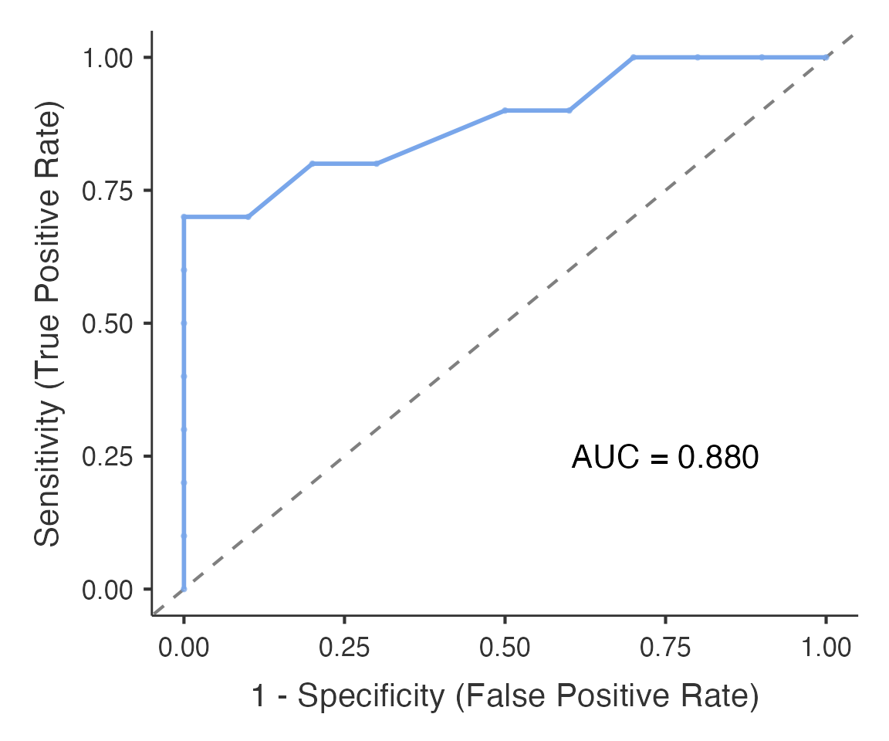

This article is a short introduction to ROC analysis with
Advanced ROC Analysis (psychopdaROC(),
meddecide > ROC). For every option see the comprehensive
guide; for a clinically oriented alternative see Clinical ROC
Analysis.
Data
df_roc <- read.csv(system.file("extdata", "roc_example.csv", package = "meddecide"))
table(df_roc$class)
#>
#> neg pos
#> 10 10ROC curve and AUC
Columns are passed by name. Name both the positive and the negative level of the outcome: they are required, and the analysis waits until both are chosen rather than guessing which level means “disease”.
roc_res <- psychopdaROC(
data = df_roc,
dependentVars = "value", # marker column(s)
classVar = "class", # outcome column
positiveClass = "pos",
negativeClass = "neg",
plotROC = TRUE
)
roc_res$resultsTable[[1]]$asDF # optimal cut-point, sensitivity, specificity, AUC
#> cutpoint sensitivity specificity ppv npv youden AUC
#> "cutpoint_1" 0.5 0.7 1 1 0.7692308 0.7 0.88
#> metricValue
#> "cutpoint_1" 0.7
roc_res$aucSummaryTable$asDF # AUC with its confidence interval
#> variable auc ci_lower ci_upper p
#> "value" value 0.88 0.6269735 0.9696931 0.008030168
roc_res$plotROC[[1]] # ROC curve
resultsTable and plotROC hold one element
per marker, hence [[1]].
By default the cut-point maximises Youden’s J (sensitivity +
specificity - 1) and the AUC confidence interval uses DeLong’s standard
error on the logit scale (aucInference = "logit"). With 20
cases, as here, the interval is wide and the “optimal” cut-point is
unstable; a cut-point chosen on the same data looks better than it will
on new patients.
Choosing a threshold
- Youden’s J balances sensitivity and specificity. It ignores prevalence and the different costs of false positives and false negatives.
For a marker that is higher in disease:
- Rule-out: pick the highest threshold that still gives the required sensitivity (for example at least 0.95).
- Rule-in: pick the lowest threshold that gives the required specificity.
-
Consequences: when the harms of the two errors
differ, use a cost ratio (
method = "oc_cost_ratio") or a decision curve (decisioncurve(), meddecide > Decision Curve Analysis).
sensSpecTable = TRUE adds a confusion matrix at the
chosen cut-point, and fixedSensSpecAnalysis = TRUE reports
the threshold that achieves a fixed sensitivity or specificity.